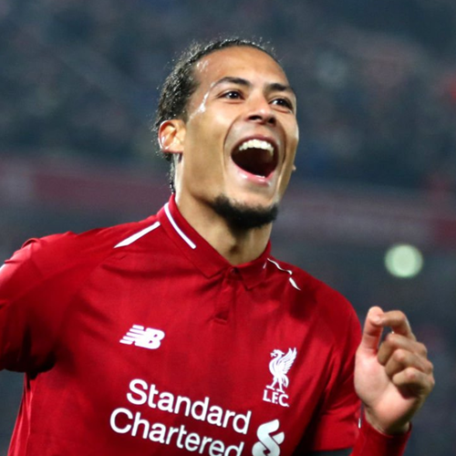
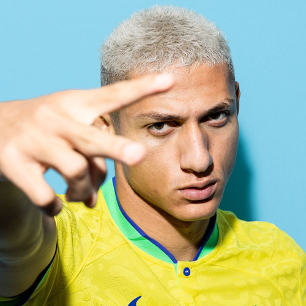
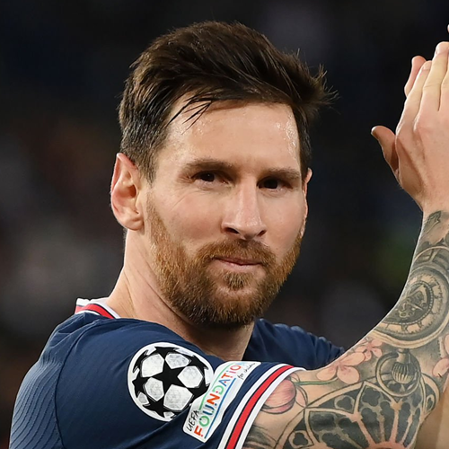
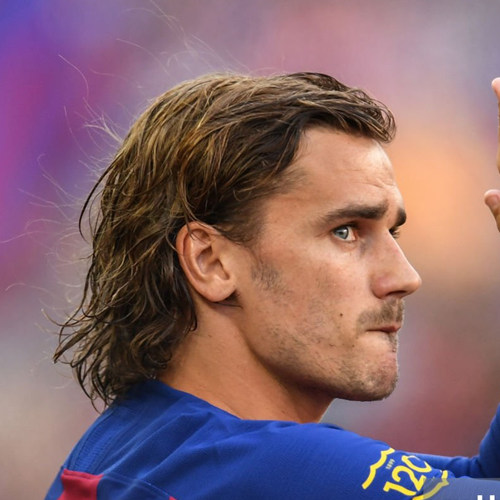
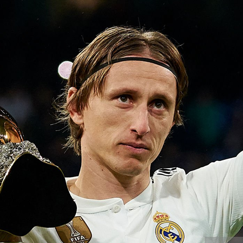

Virgil Van Dijk
Jogador de futebol
Virgil van Dijk é um futebolista neerlandes que atua como zagueiro. Atualmente joga pelo Liverpool. Virgil é conhecido por sua força, seriedade, liderança, força, excelência em jogo aéreo e posicionamento, além do seu grande senso de cobertura.
Kevin De Bruyne
Jogador de futebol
Kevin De Bruyne é um futebolista belga que atua como meio-campista. Atualmente defende o Manchester City. Seu estilo de jogo frequentemente levou a mídia, treinadores e colegas a classificá-lo entre os melhores jogadores do mundo, e costuma ser descrito como jogador completo.

Richarlion
Jogador de futebol
Richarlison de Andrade, mais conhecido apenas como Richarlison, é um futebolista brasileiro que atua como atacante. Atualmente, joga no Tottenham.

Messi
Jogador de futebol
Lionel Andrés Messi Cuccittini é um futebolista argentino que atua como atacante. Atualmente joga pelo Paris Saint-Germain e pela Seleção Argentina, onde é capitão.

Antoine Griezmann
Jogador de futebol
Antoine Griezmann é um futebolista francês que atua como atacante. Atualmente defende o Atlético de Madrid. Griezmann começou sua carreira na Real Sociedad, fazendo sua estreia em 2009 e ganhando o título da Segunda Divisão Espanhola em sua primeira temporada.

Luka Modrić
Jogador de futebol
Luka Modrić é um futebolista croata que atua como meio-campista. Atualmente defende o Real Madrid e a Seleção Croata. Foi eleito o Melhor Jogador do Mundo no ano de 2018 e é considerado o maior jogador croata da história do esporte.